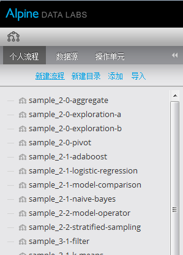
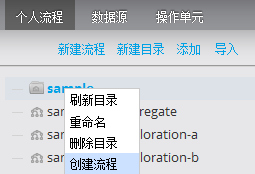
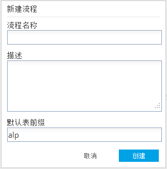

新建流程
用户具有建模师角色才能创建新流程。以下是在Alpine内创建新流程的步骤。
- 在导航面板选择“个人流程”选项卡，单击“新建流程”；或单击类别（文件夹），右键选择“创建流程”，实现在类别下创建新流程。
 
- “创建新流程”对话框有以下内容：
- 流程名称: 必须是连续的字母或者数字，不能包含^ ~ # % & * { } / \ : <> ? | " ' . ;和空格。
- 描述: （可选）对此流程的简短介绍
- 默认表前缀: （可选） 运行本流程生成的表和文件都有此前缀；如果留空，Alpine将使用在“工作流变量”对话框中定义的前缀。

- 一旦创建成功，新流程将显示在左侧的导航栏中并且选中，用户可以对新流程进行编辑。